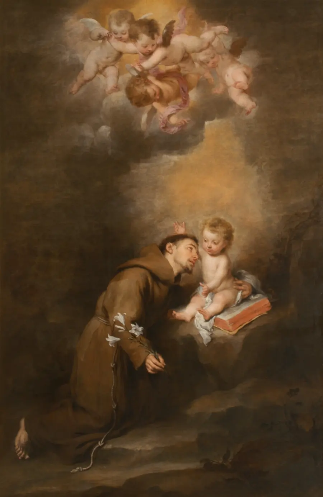

The Franciscan Friars of the Atonement's telling of Anthony's life, narrated by Fr. Bob Warren (about 11 minutes). Watch on YouTube.
St. Anthony of Padua
A quiet Augustinian canon in Portugal who gave up everything to chase martyrdom in Morocco, got sick instead, and washed up in Italy - where one impromptu sermon at an ordination revealed the most gifted preacher of his age. Saint Francis himself blessed his teaching. He died at thirty-five, was canonized less than a year later, and eight centuries on he is the saint the whole world asks for help finding lost things. This page is his story, his teaching in his own words, and where to watch his life told well.

At a Glance
Who: Fernando Martins de Bulhões (c. 1195-1231), born in Lisbon, a Franciscan friar who took the name Anthony - "of Padua" for the city where he died and is buried, "of Lisbon" for the city where he was born.
Known for: the most celebrated preacher of his generation; the first theology teacher of the Franciscan order; the titles "Ark of the Testament" (given by Pope Gregory IX, who heard him preach) and "Evangelical Doctor" (Pius XII, who named him a Doctor of the Church in 1946); and his patronage of lost things.
Status: canonized by Pope Gregory IX in 1232 - less than a year after his death, among the fastest canonizations in Church history. His feast is June 13, the day he died.
The honest fine print: the lost-things patronage is a devotional tradition, not a formal title - it grew from a story his early biographers told about a stolen book, and from eight centuries of answered prayers since. The apparition of the Child Jesus shown in so many images of him comes from those same early sources.
His Life (c. 1195-1231)
He was born into a noble family in Lisbon about 1195 and baptized Fernando. He joined the Augustinian Canons, first at St. Vincent's in Lisbon and then at Holy Cross in Coimbra - a renowned center of learning, where he gave himself to the Bible and the Church Fathers. The turning point came in 1220, when the relics of the first five Franciscan missionaries, martyred in Morocco, passed through Coimbra. Their witness lit a fire in him: he asked to leave the canons, became a Friar Minor, took the name Anthony, and sailed for Morocco to seek the same crown.
God disposed otherwise. He fell gravely ill and had to sail home - and his ship was blown off course to Sicily. In 1221 he attended the great gathering of the young order at Assisi, the "Chapter of the Mats," where he met Saint Francis. Then he disappeared into obscurity at a hermitage near Forlì, washing pots and praying, known to no one as anything but a simple brother. It ended by accident: at a priestly ordination, when no one was prepared to preach, Anthony was pushed forward - and his learning and eloquence astonished everyone. The superiors gave him preaching, and Francis himself gave him teaching, writing him a short letter that began: "I would like you to teach the brethren theology." He became the order's first theology teacher, at Bologna.
For the rest of his short life he preached - in the cities of southern France against heresy, then across northern Italy, where crowds so large came that shops closed and churches could not hold them. Pope Gregory IX heard him and called him the "Ark of the Testament" - a man who carried the Scriptures in himself. Made Provincial of the friars in northern Italy, he governed and preached together, then withdrew near Padua when his term ended. He died at the gates of the city on June 13, 1231, barely a year later, at about thirty-five years old. Padua has never let him go: the great basilica rose over his tomb, and miracles through his intercession moved Gregory IX to canonize him in 1232 - less than a year after his death.
The Ark of the Testament
In his last years Anthony put his preaching into writing: two cycles of Sermons, for Sundays and for the feasts of the saints, meant for the order's preachers and teachers. He read Scripture the way the Fathers did - in four senses at once, from the literal history to the moral meaning to the life of the world to come - and Benedict XVI pointed to him as a master from whom today's preachers can still learn the art: solid doctrine joined to fervent devotion. The theology he began among the friars flowered after him in Saint Bonaventure and Blessed Duns Scotus.
And the lost things? His early biographers tell that a novice who left the order took Anthony's own psalter - a book he had annotated for his teaching, precious in an age before printing. Anthony prayed for its return, and the young man came back, gave back the book, and rejoined the friars. From that story, and from countless favors since, grew the custom the whole world knows: when something is lost, ask Anthony. It is a devotion, not a dogma - and one of the most loved in the Church.

His Teaching, in His Own Words
"Christ who is your life is hanging before you, so that you may look at the Cross as in a mirror." From his Sermons. Look closely at that mirror, he says, and you learn two things at once: how deep our wounds ran - that only the Blood of the Son of God could heal them - and how great our dignity is. "Nowhere other than looking at himself in the mirror of the Cross can man better understand how much he is worth."
"If you preach Jesus, he will melt hardened hearts; if you invoke him he will soften harsh temptations; if you think of him he will enlighten your mind; if you read of him he will satisfy your intellect." Also from the Sermons - his advice to preachers, and his own secret. Benedict XVI quoted it as Anthony's counsel to everyone who proclaims the word.
"I would like you to teach the brethren theology." Not Anthony's words but Saint Francis's - the opening of the little letter that sent him to the lecture hall at Bologna. It is the founder's own blessing on Anthony's path: that the order of poverty should also be an order of learning, and that study belongs to the service of the Gospel.
Watch: St. Anthony of Padua
Video hosted on YouTube by the Franciscan Friars of the Atonement and the Franciscan Friars. Each embed uses youtube-nocookie.com - no YouTube cookies are set unless you press play - and each video was verified playable before embedding.
A feast-day homily from the Franciscan Friars on Anthony the preacher (about 10 minutes). Watch on YouTube.
These videos are hosted by their channels and were not produced by this site.
Frequently Asked Questions
Why is Saint Anthony the patron of lost things?
From a story his early biographers tell: a departing novice stole Anthony's personal psalter - a book he had annotated for teaching, precious before printing existed. Anthony prayed, and the young man returned the book and came back to the friars. Devotion to him for lost items grew from that story and from eight centuries of favors since. It is a beloved devotional custom, not a formal title.
Was he Italian or Portuguese?
Portuguese by birth - he was born in Lisbon and baptized Fernando - and Italian by adoption. He is called "of Padua" for the city where he spent his last years, died in 1231, and is buried, and sometimes "of Lisbon" for his native city. Both cities claim him, and so does the whole Church.
How fast was he canonized?
Less than a year after his death - among the fastest canonizations in Church history. He died on June 13, 1231, and Pope Gregory IX, who had heard him preach and called him the "Ark of the Testament," enrolled him among the saints in 1232, moved by the miracles worked through his intercession.
What did Saint Francis think of him?
They met at the great Chapter of the Mats in Assisi in 1221. Francis later entrusted Anthony with what he guarded most carefully - the friars' formation - writing him the short letter that opens "I would like you to teach the brethren theology." Anthony became the Franciscan order's first theology teacher, at Bologna.
Why is he shown with the Child Jesus?
His early biographers record a miraculous apparition of the Christ Child to Anthony, and artists have painted it ever since - the friar holding, or kneeling before, the Child, often with a lily for his purity. It comes from those early sources, the same tradition Benedict XVI cites when describing his images.
Sources
- Benedict XVI, general audience on Saint Anthony of Padua (February 10, 2010) - the life: Lisbon and Coimbra, the martyrs' relics, Morocco and the shipwreck, the Chapter of the Mats, the sermon that revealed him, Francis's letter, the "Ark of the Testament," his death and canonization - and the two quotes from his Sermons
- Saint Anthony of Padua, Sermones Dominicales et Festivi - his two cycles of sermons, source of the quotes above as cited by Benedict XVI